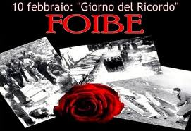

 foibe, si intendono gli eccidi ai danni della popolazione italiana della Venezia Giulia e della Dalmazia, occorsi durante la seconda guerra mondiale e nell'immediato dopoguerra. Il nome deriva dai grandi inghiottitoi carsici dove furono gettati i corpi delle vittime, che nella Venezia Giulia sono chiamati, appunto, "foibe".
Per estensione i termini "foibe" ed il neologismo "infoibare" sono diventati sinonimi di uccisioni che in realtà furono in massima parte perpetrate in modo diverso: la maggioranza delle vittime morì nei campi di prigionia jugoslavi o durante la deportazione verso di essi.
Il fenomeno dei massacri delle foibe è da inquadrare storicamente nell'ambito della secolare disputa fra italiani e popoli slavi per il possesso delle terre dell'Adriatico orientale, nelle lotte intestine fra i diversi popoli che vivevano in quell'area e nelle grandi ondate epurative jugoslave del dopoguerra, che colpirono centinaia di migliaia di persone in un paese nel quale, con il crollo della dittatura fascista, andava imponendosi quella di stampo filo-sovietico, con mire sui territori di diversi paesi confinanti.
Gli eccidi delle foibe
Il termine "foibe" (al plurale) è oggi comunemente associato agli eccidi commessi dai partigiani jugoslavi comunisti durante e subito dopo la seconda guerra mondiale. L'utilizzo del termine, secondo alcuni autori, è improprio: solo una minima parte delle vittime, infatti, fu occultata nelle foibe, mentre la maggior parte perse la vita in tutt'altro modo (nelle prigioni o nei campi iugoslavi, o nelle marce di trasferimento).
Ulteriore confusione ingenera il fatto che molte delle cosiddette "foibe" erano in realtà cave o miniere: la famosa "foiba di Basovizza", ad esempio, era in realtà il pozzo abbandonato di una miniera di carbone.
In anni recenti è invalso, saltuariamente, l'uso dei termini "foiba" ed "infoibare" anche per indicare esecuzioni sommarie svoltesi, nell'immediato dopoguerra, al di fuori della Venezia Giulia.Per quanto detto sopra, l'uso del termine in tale contesto, appare non corretto, sia da un punto di vista storico che etimologico.